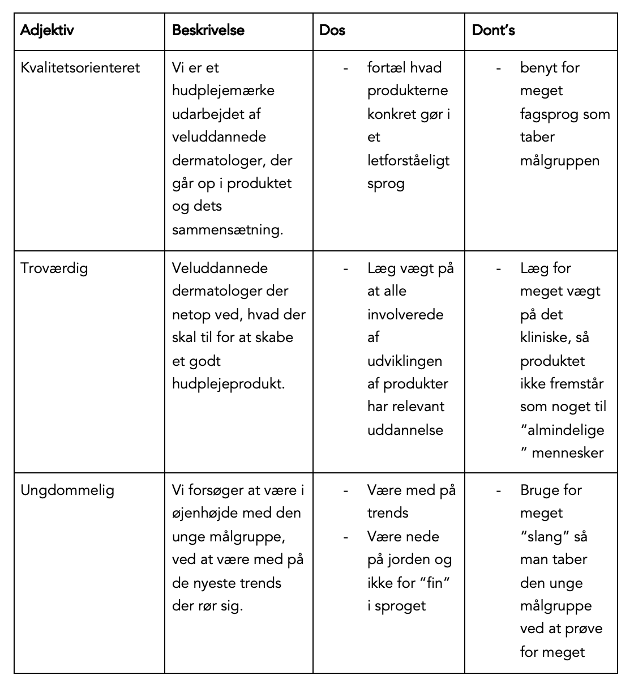

Supportside

SoMe, formål og mål
Vi henvender os primært til unge i alderen 16-25. Da disse unge oftest hyppigt benytter forskellige sociale medier, er det også der vi vil lægge meget energi i at markedsføre vores virksomhed. Vores mål er at informere vores målgruppe om vores konkurrencedygtige og effektive produkter.
Vi vil altså markedsføre vores produkter i en sådan grad på de sociale medier at vores budskab bliver spredt og vores kundegruppe vokser yderligere. Dette gøres primært igennem sociale medier som tiktok, der især er oppe i tiden i øjeblikket. Det er et af de helt store muligheder for at fange vores målgruppes opmærksomhed, og gøre dem interesserede i vores velvirkende produkter.
Content & SoMe posts
Nedenfor ses information om CeraVes igangværende kampagner i form af forskellige posts indeholdende billeder og videoer med dertilhørende captions.
Igangværende kampagner
CeraVe har på nuværende tidspunkt igangværende kampagner. Siden her vil opdateres når ny kampagne er klarlagt.
Tidligere kampagner tryk her!
SEO, ToV og design guidelines
SEO
I vores forskellige kampagneforløb arbejdes der med SEO eksempelvis igennem de posts der lægges onling, og deres dertilhørende captions. Gennem research med bl.a. Google Trends og egne Google søgninger udarbejdet særligt relevante keywords, som skal har inkorporeres i vores captions. Dette er med henblik på at være så synlige og let tilgængelige for vores målgruppe som muligt, så indholdet når ud til dem, og vores kampagner derfor får størst mulig effekt.
Offpage SEO
Ved at indsætte links til vores hjemmeside, på de posts der lægges online på forskellige sociale medier, opnår vi at få spredt vores links på disse platforme.
Onpage SEO
I koden på vores hjemmeside har vi benyttet os af Headings (h1, h2, h3, h4), og har max brugt én h1 per side. Derudover har vi titlen på forsiden og de forskellige undersider, brugt max 60 for at gøre, det mere overskueligt at læse hvilken side man er på, og så virksomheden efterfølgende.
Tone of Voice
Her hos CeraVe vil vi gerne ramme vores kunder i øjenhøjde. For at gøre dette på bedst mulig vis har vi her lagt nogle retninglinjer for, hvordan vi kommunikerer ud til vores kunder. Nedenfor ses, hvordan vi skal leverer vores budskab til vores kundegruppe. Det er vigtigt at alle former for kommunikation og marketing foregår med disse retningslinjer i baghovedet.
Designmanual
I vores designmanual ses det hvordan vores forskellige designelementer, som eksempelvis logo og skrifttyper, benyttes til at opnå en ensartet æstetik henholdsvis på vores hjemmeside og på materiale til kommunikation til kundegruppen.